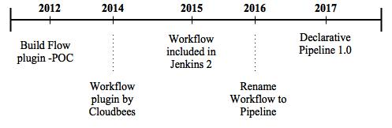
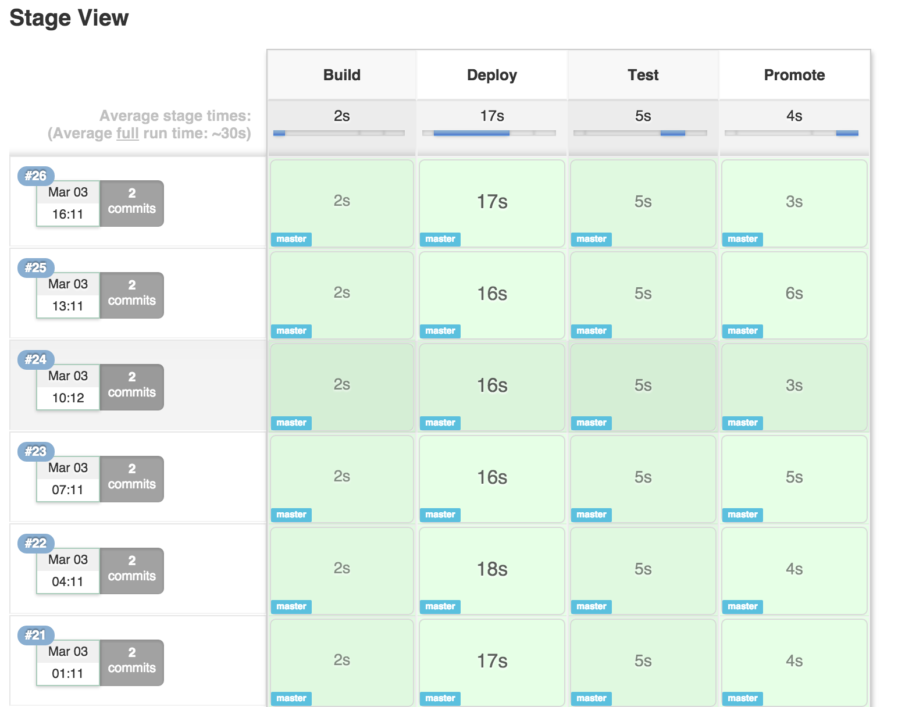

Jenkins - Pipeline
Descriptive build steps


Background
Jenkins Pipeline - on the shoulders of giants.
Build Flow plugin
By Nicolas De Loof
Received great feedback
Only ment as proof of concept
Only ment as proof of concept
Workflow plugin
Cloudbees recognise the potential of Build Flow
From scratch, creates a new plugin
learning from the predessors mistakes
Included in Jenkins 2
Becomes a central priority
Out of the box with Jenkins 2
Struggles with the name
Struggles with the name
Renames the plugin
Cloudbees gives up promoting the name Workflow
The plugin is already known as Pipeline
Creates issue: Rename plugin
Creates issue: Rename plugin
Introducing the Jenkinsfile
New syntax for pipeline as code
2do: ADD sample code from Jenkinsfile
Benefits of Pipeline
Great UI overview of each step
Configuration as code easy to version control
Open for third-party extensions and plugin integration
UI overview
- Shows each stage and time spent
- Show which commits are being built
Configuration as code
- Version control build scripts
Introducing the Jenkinsfile
Declarative Pipeline
vs.
Scripted Pipeline
Declarative pipeline - predefined "declarative" sections
Scripted pipeline - less restricted groovy scripting
Pipeline dictionary
Pipeline
Stages
Step
When
Jenkinsfile (declarative) example
pipeline {
agent any
stages {
stage('build'){
steps {
echo 'this is the build stage'
script {
make
}
}
}
stage('test'){
echo 'this is the test stage'
}
stage('deploy'){
when ( branch 'production')
echo 'this is the deploy stage'
}
}
}
Jenkinsfile (scripted) example
node {
stage('build'){
steps {
}
}
stage('test'){
echo 'this is the test stage'
}
stage('deploy'){
when ( branch 'production')
echo 'this is the deploy stage'
}
}
}
"How can i do *this* with pipelines?"
Shared Libraries
Pros: Reusable code
Cons: Reduced reproducability, only for scripted pipelines
Naming conventions
1. Give the file name the name of the method
2. def call creates function as a step
def call(String gitrepo = 'jenkinsAsCode') {
git url: http://github.com/praqma/${gitrepo}
}
3. UseCamelNotationAsNamingConvention
Using the shared files in your library
Include library with: '@Library('my_shared_library@branch/tag)' _
@Library('HelpLib@master')
node {
stage('CheckoutRepo') {
def repo = 'my-repo'
checkoutRepo repo // calls method with parameter
checkoutRepo() // calls method with default parameter
}
}